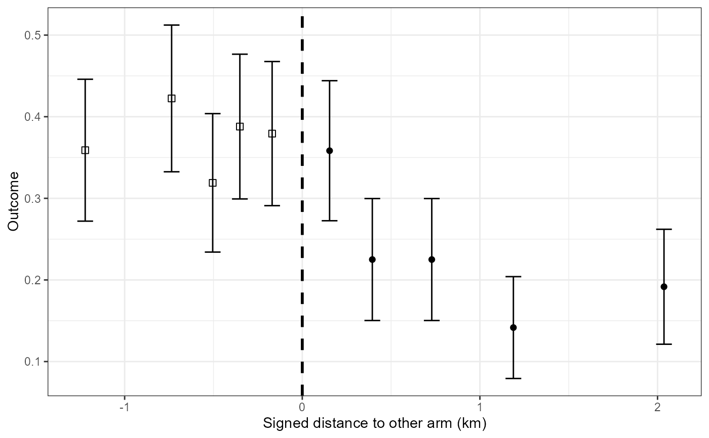

Graphical displays of the geography of a CRT
plotCRT.RdplotCRT returns graphical displays of the geography of a CRT
or of the results of statistical analyses of a CRT
Usage
plotCRT(
object,
map = FALSE,
distance = "nearestDiscord",
fill = "arms",
showLocations = FALSE,
showClusterBoundaries = TRUE,
showClusterLabels = FALSE,
showBuffer = FALSE,
cpalette = NULL,
buffer_width = NULL,
maskbuffer = 0.2,
labelsize = 4,
legend.position = NULL
)Arguments
- object
object of class
'CRTanalysis'produced byCRTanalysis()- map
logical: indicator of whether a map is required
- distance
measure of distance or surround with options:
"nearestDiscord"distance to nearest discordant location (km) "disc"disc "hdep"Tukey's half space depth "sdep"simplicial depth - fill
fill layer of map with options:
'cluster'cluster assignment 'arms'arm assignment 'nearestDiscord'distance to the nearest discordant location 'disc'disc measure of surround 'hdep'Tukey's half space depth 'sdep'simplicial depth 'prediction'model prediction of the outcome 'none'No fill - showLocations
logical: determining whether locations are shown
- showClusterBoundaries
logical: determining whether cluster boundaries are shown
- showClusterLabels
logical: determining whether the cluster numbers are shown
- showBuffer
logical: whether a buffer zone should be overlayed
- cpalette
colour palette (to use different colours for clusters this must be at least as long as the number of clusters.
- buffer_width
width of buffer zone to be overlayed (km)
- maskbuffer
radius of buffer around inhabited areas (km)
- labelsize
size of cluster number labels
- legend.position
(using
ggplot2::themessyntax)
Details
If map = FALSE and the input is a trial data frame or a CRTsp object,
containing a randomisation to arms, a stacked bar chart of the outcome
grouped by the specified distance is produced. If the specified distance
has not yet been calculated an error is returned.
If map = FALSE and the input is a CRTanalysis object a plot of the
estimated spillover function is generated. The fitted spillover function is plotted
as a continuous green/blue line against the measure of
the surround or of the distance to the nearest discordant location. Using the same axes, data summaries are plotted for
ten categories of distance from the boundary. Both the
average of the outcome and confidence intervals are plotted.If spillover limits have been estimated
then these limits are used to delimit a shaded rectangular overlay, providing they fall within the range of distances
in the data. If the spillover limits fall outside the range of the data then the range of distances in the data
define the boundaries of the shaded area.
For analyses with logit link function the outcome is plotted as a proportion.
For analyses with log or cloglog link function the data are plotted on a scale of the Williams mean (mean of exp(log(x + 1))) - 1) rescaled so that the median matches the fitted curve at the midpoint.
If map = TRUE a thematic map corresponding to the value of fill is generated.
fill = 'clusters'or leads to thematic map showing the locations of the clustersfill = 'arms'leads to a thematic map showing the geography of the randomizationfill = 'distance'leads to a raster plot of the distance to the nearest discordant location.fill = 'prediction'leads to a raster plot of predictions from an'INLA'model.
If showBuffer = TRUE the map is overlaid with a grey transparent layer showing which
areas are within a defined distance of the boundary between the arms. Possibilities are:
If the trial has not been randomised or if
showBuffer = FALSEno buffer is displayedIf
buffer_widthtakes a positive value then buffers of this width are displayed irrespective of any pre-specified or spillover limits.If the input is a
'CRTanalysis'and spillover limits have been estimated then these limits are used to define the displayed buffer providing they fall within the range of distances in the data.If
buffer_widthis not specified and no spillover limits are available, then any pre-specified buffer (e.g. one generated byspecify_buffer()) is displayed.
A message is output indicating which of these possibilities applies.
Examples
{example <- readdata('exampleCRT.txt')
#Plot of data by distance
plotCRT(example)
#Map of locations only
plotCRT(example, map = TRUE, fill = 'none', showLocations = TRUE,
showClusterBoundaries=FALSE, maskbuffer=0.2)
#show cluster boundaries and number clusters
plotCRT(example, map = TRUE, fill ='none', showClusterBoundaries=TRUE,
showClusterLabels=TRUE, maskbuffer=0.2, labelsize = 2)
#show clusters in colour
plotCRT(example, map = TRUE, fill = 'clusters', showClusterLabels = TRUE,
labelsize=2, maskbuffer=0.2)
#show arms
plotCRT(example, map = TRUE,
fill = 'arms', maskbuffer=0.2, legend.position=c(0.8,0.8))
#spillover plot
analysis <- CRTanalysis(example)
plotCRT(analysis, map = FALSE)
}
#> (Intercept) armintervention
#> -0.5172565 -0.7004896
#> Warning: *** No fitted curve available ***
